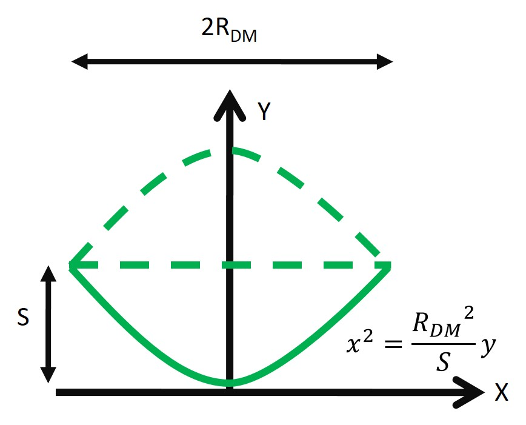

Volumetric SRS imaging(V-SRS) performs a significant part in biological studies by allowing label-free three-dimensional measurement of chemical distribution.
I participated in the research to develop a high-speed aberration-free volumetric SRS technology at the Photonics Center, Boston University in summer, 2018.
My mentor was professor Jixin Cheng. Professor Thomas Bifano provided the project a MEMS deformable mirror and advised me in the use of the deformable mirror.
In this project, I collaborated with a Ph.D. student to design and build a volumetric SRS imaging system with the deformable mirror.
To optimize system characteristics, I analyzed issues influencing signal SNR, system axial resolution and scan range, then conducted experiments to examine the analyzation.
I also designed LabVIEW programs for different scanning strategies to get the fastest imaging speed.
And I learned adaptive optics to compensate system aberrations with the deformable mirror.
Fig 1. Volumetric SRS Imaging System Setup

Fig 2. MEMS Deformable Mirror [1] (Left)
Simplified Deformable Mirror(Right)
Fig 3. System Depth of Field Analysis
Fig 4. 5μm PMMA beads SRS volumetric imaging
Before system optimization (Left), After system optimization (Right)
Fig 5. 5μm PMMA beads SRS images
Without Adaptive Optics (First Row), With Adaptive Optics (Second Row)
Reference:
[1] Shain W J , Vickers N A , Goldberg B B , et al.
Extended depth-of-field microscopy with a high-speed deformable mirror[J].
Optics Letters, 2017, 42(5):995.
Capillary hemodynamics is important in brain activity researches.
By analyzing OCT signal variation, capillary blood flow velocity can be quantified in-vivo.
Under the instruction of professor Peng Li, I reviewed several methods of capillary velocimetry and implemented them in a phantom.
This project aimed to personalize visual aid for the blind. My mentor was professor Kaiwei Wang.
If I want to find my wallet, the visual aid algorithm is better to detect my wallet rather than all kinds of wallet.
Convolutional neural network(CNN) has high classification accuracy and wide range, but it requires large training data and long training time.
Therefore, CNN can only classify trained objects and is unable to give personalized classification.
To solve this problem, I learned about one shot learning and implemented Matching Net.
Fig 1. Structure of Matching Net
Fig 2. Bidirectional LSTM
Fig 3. LSTM with Read-attention
The CNN trained in large dataset generates representative vectors of input images.
By calculating cosine similarities these vectors, the model can classify the target image to the most similar class.
However, merely compare target feature vector with support feature vectors one by one is not enough. The model has to
understand the classification task in a global view. The classification task is similar to a reading task.
If I want to find the sentence that best resembles the meaning of the given sentence from an article,
I would first read and understand the article as a whole, then search my target according to the given sentence.
Therefore, the model adopts bidirectional LSTM and LSTM with reading attention.
The bidirectional LSTM interprets every support image with an overview of the support set.
The LSTM with reading attention allocates attention to the support features according to the target feature.
With the allocated attention, the LSTM reads information from the support set and modifies the target feature with the information.
Reference:
[1] Vinyals O, Blundell C, Lillicrap T, et al.
Matching Networks for One Shot Learning[J]. 2016.